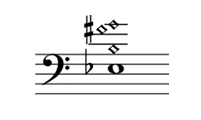

Sunset in Marfa, 2016
I am a third-year Eugene McDermott Scholar at the University of Texas at Dallas, where I am pursuing a B.S. in Physics.
My activities are largely governed by my passion for astronomy and music. As a member of the Society of Physics Students, I help coordinate public star parties and attend meetings and colloquia to discuss research. I have conducted astrophysical research and currently work in the fluid dynamics lab of McDermott Graduate Fellow Diana Alatalo. I am also an electric and upright bassist and am active in the Dallas music scene.
I am confident that some form of teaching and performance will become central to my professional life. My service as a branch manager for IntelliChoice (a free math tutoring organization) and as an assistant for technology classes at the Richardson Public Library has led me to view teaching as an opportunity to impart the skills and values needed to succeed as a leader and individual in an increasingly quantitative and automated world. I will continue to share the beauties of astronomy and music to ignite the curiosity, sense of awe, and capacity to wonder in my audiences.
You can read more about my recent activities on the McDermott Scholars' Blog.
I regularly perform with the Crosswinds Jazz Band, blues/world musician Stephen Houpt, the C3 Big Band, Addis (a jazz/fusion/world group), and Strictly Tablue (an electric blues band). I also coordinate and lead jam sessions that follow the Helbing Jazz Initiative's monthly masterclasses.
I’ll Be Through Them Hills and Gone
Tomorrow the mountains will be sleeping / Silent 'neath a blanket green and blue / All that I shall hear / The silence they are keeping / I'll bring all their promises to you
-Townes Van Zandt, “Snowin’ on Raton
Searching
Traveling down a gradient of potential energy, we experience force; traveling down a gradient of emotion, we experience joy. Searching encourages us to find beauty and joy in everything.
| Location | Date | Time | With/About |
|---|---|---|---|
| Holiday Concert | Tuesday, December 10th, 2019 | 2:00 & 6:00 p.m. | Parkinson Voice Project |
| Shebelle Ethiopian Cuisine & Bar | Saturday, December 7th, 2019 | 7:00-9:00 p.m. | Addis |
| NTTDS Contra Dance, 6202 Mockingbird | Saturday, November 16th, 2019 | 7:30-10:00 p.m. | Squirrelheads in Gravy |
| Shebelle Ethiopian Cuisine & Bar | Saturday, November 2nd, 2019 | 7:00-9:00 p.m. | Addis |
| Shebelle Ethiopian Cuisine & Bar | Saturday, October 5th, 2019 | 7:00-9:00 p.m. | Addis |
| Checkered Past Winery | Saturday, September 14th, 2019 | 8:30-11:00 p.m. | Light on the Mountain CD Release Party |
| Shebelle Ethiopian Cuisine & Bar | Saturday, September 7th, 2019 | 7:00-9:00 p.m. | Addis |
| Private Event | Sunday, August 4th, 2019 | 5:30-8:00 p.m. | Mike Camerata & Friends |
| First Baptist Richardson | Sunday, August 4th, 2019 | 9:30-11:00 a.m. | Worship band |
| Williamson Music 1st, 701 E Plano Pkwy #100 | Saturday, August 3rd, 2019 | 11:30 a.m.-12:45 p.m. | Helbing Jazz Initiative Jam Session |
| Shebelle Ethiopian Cuisine & Bar | Friday, August 2nd, 2019 | 7:00-9:00 p.m. | Addis: Old Favorites & Original Compositions |
| Z Grill & Tap | Wednesday, July 31st, 2019 | 7:00-10:00 p.m. | Crosswinds Jazz Band |
| First Baptist Richardson | Sunday, July 28th, 2019 | 9:30-11:00 a.m. | Worship band |
| Chili Line Brewing, Lamy, New Mexico | Saturday, July 20th, 2019 | 3:00-6:00 p.m. | solo bass |
| Santa Fe Oxygen & Healing Bar, New Mexico | Friday, July 19th, 2019 | 8:30-10:30 p.m. | solo bass |
| The Adobe Bar @ The Taos Inn, New Mexico | Tuesday, July 16th, 2019 | 4:00-5:30 p.m. | Stephen Houpt |
| Casa de Cultura, Valencia, Spain | Saturday, July 6th, 2019 | 8:00 p.m. | UTD-Gandia Guitar Ensemble |
| Killarney's Live Irish Pub | Sunday, June 23rd, 2019 | 4:00-6:15 p.m. | Frisco Jazz Band |
| First Baptist Richardson | Sunday, June 23rd, 2019 | 9:30-11:00 a.m. | Worship band |
| Private Event | Wednesday, June 19th, 2019 | 10:45-11:45 a.m. | Parkinson Voice Project |
| First Baptist Richardson | Sunday, June 16th, 2019 | 9:30-11:00 a.m. | Worship band |
| Shebelle Ethiopian Cuisine & Bar | Friday, June 14th, 2019 | 7:00-9:00 p.m. | featuring Susan Hanlon |
| The Wine Therapist | Sunday, June 9th, 2019 | 4:00-5:30 p.m. | Stephen Houpt |
| Private event | Saturday, June 8th, 2019 | 5:00-9:00 p.m. | C3 Big Band |
| Private event | Wednesday, June 5th, 2019 | 5:45-7:15 p.m. | with Corey Breedlove and Kazunori Tanaka |
| First Baptist Richardson | Sunday, June 2nd, 2019 | 9:30-11:00 a.m. | Worship band |
| Shebelle Ethiopian Cuisine & Bar | Friday, May 31st, 2019 | 7:00-8:30 p.m. | with friends |
| Sweetwater Grill & Tavern | Thursday, May 30th, 2019 | 8:00-10:00 p.m. | Crosswinds Jazz Band |
| El Dorado Retirement Home | Thursday, May 30th, 2019 | 4:30-5:30 p.m. | with Ben Wise |
| First Baptist Richardson | Sunday, May 26th, 2019 | 9:30-11:00 a.m. | Worship band |
| El Dorado Retirement Home | Thursday, May 23rd, 2019 | 3:15-4:15 p.m. | solo piano |
| Eisemann Center (Private Event) | Wednesday, May 22nd, 2019 | 7:00-9:00 p.m. | Mike Myers, Paul Lees, Spencer Kenney |
| Poor David's Pub | Friday, May 17th, 2019 | 7:00-9:00 p.m. | Strictly Tablue (Album Release Party) |
| El Dorado Retirement Home | Thursday, May 16th, 2019 | 3:15-4:15 p.m. | solo piano |
| First Baptist Richardson | Sunday, May 12th, 2019 | 9:30-11:00 a.m. | Worship band |
| First Baptist Richardson | Sunday, May 5th, 2019 | 6:00 p.m. | Concert with Wyle Community Orchestra |
| Williamson Music 1st, 701 E Plano Pkwy #100 | Saturday, May 4th, 2019 | 11:30 a.m.-12:45 p.m. | Helbing Jazz Initiative Jam Session |
| Denton Arts & Jazz Festival | Sunday, April 28th, 2019 | 1:00 p.m. | Crosswinds Jazz Band |
| First Baptist Richardson | Sunday, April 28th, 2019 | 9:30 a.m. | Worship band |
| Z Grill & Tap | Wednesday, April 24th, 2019 | 7:00-10:00 p.m. | C3 Big Band |
| First Baptist Richardson | Sunday, April 21st, 2019 | 9:30 a.m. | Worship band |
| Austin Street Homeless Shelter | Thursday, April 11th, 2019 | 6:00-7:30 p.m. | St. Mark's Blues Club |
| Williamson Music 1st, 701 E Plano Pkwy #100 | Saturday, April 6th, 2019 | 11:30 a.m.-12:45 p.m. | Helbing Jazz Initiative Jam Session |
| The Prophet Bar | Sunday, March 24th, 2019 | 8:45-9:45 p.m. | Addis |
| Z Grill & Tap | Wednesday, March 20th, 2019 | 7:00-10:00 p.m. | C3 Big Band |
| Checkered Past Winery | Friday, March 15th, 2019 | 8:30-11:30 p.m. | Soul'd Out (Rodney McDonald) |
| Z Grill & Tap | Wednesday, February 27th, 2019 | 7:00-10:00 p.m. | Crosswinds Jazz Band |
| Free Man Cajun Café | Sunday, February 24th, 2019 | 2:00-5:00 p.m. | Crosswinds Jazz Band |
| Z Grill & Tap | Wednesday, February 20th, 2019 | 7:00-10:00 p.m. | C3 Big Band |
| NTTDS Contra Dance, 6202 Mockingbird | Saturday, February 16th, 2019 | 7:30-10:00 p.m. | Squirrelheads in Gravy |
| Williamson Music 1st, 701 E Plano Pkwy #100 | Saturday, February 2nd, 2019 | 11:30 a.m.-12:45 p.m. | Helbing Jazz Initiative Jam Session |
| The Wine Therapist (A Birthday Celebration) | Friday, January 18th, 2019 | 8:30-11:30 p.m. | Stephen Houpt & Strictly Tablue | Z Grill & Tap | Wednesday, January 16th, 2019 | 7:00-10:00 p.m. | C3 Big Band |
| Z Grill & Tap | Wednesday, December 5th, 2018 | 7:00-10:00 p.m. | Crosswinds Jazz Band |
| Austin Street Homeless Shelter | Thursday, November 29th, 2018 | 6:00-7:00 p.m. | St. Mark's Blues Club |
| St. Mark's Chapel (Upper School service) | Wednesday, November 28th, 2018 | 10:30-11:00 a.m. | Stephen Houpt |
| St. Mark's Chapel (Middle School service) | Tuesday, November 27th, 2018 | 10:30-11:00 a.m. | Stephen Houpt |
| Shebelle Ethiopian Cuisine & Bar | Saturday, November 17th, 2018 | 7:30-9:00 p.m. | Addis |
| The Wine Therapist | Friday, November 16th, 2018 | 8:30-11:30 p.m. | Stephen Houpt |
| University of Texas at Dallas (private event) | Sunday, November 11th, 2018 | 5:00 p.m. | Addis |
| Private event | Sunday, November 4th, 2018 | 7:00-9:00 p.m. | Mike Camerata, Jamie Ringholm |
| Global Village Market, 5835 Penrose | Saturday, November 3rd, 2018 | 1:00-3:00 p.m. | Stephen Houpt & Michelle Stroescu |
| The Wine Therapist | Saturday, October 20th, 2018 | 8:30-11:30 p.m. | Stephen Houpt |
| Austin Street Homeless Shelter | Thursday, October 11th, 2018 | 6:00-7:00 p.m. | St. Mark's Blues Club |
| Oak Creek Tennis Center (private event) | Saturday, September 29th, 2018 | 3:00-4:00 p.m. | Crosswinds Jazz Band |
| The Wine Therapist | Friday, September 21st, 2018 | 8:30-11:30 p.m. | Stephen Houpt |
| The Wine Therapist | Friday, August 17th, 2018 | 8:30-11:30 p.m. | Stephen Houpt |
| Dallas Athletic Country Club | Tuesday, August 7th, 2018 | 10:00-11:00 a.m | Stephen Houpt & Michelle Stroescu |
| The Wine Therapist | Friday, June 22nd, 2018 | 8:30-11:30 p.m. | Stephen Houpt & Michelle Stroescu |
Please contact me at chiragokani@gmail.com for booking information.
Light on the Mountain (to be released September 7, 2019)

I handcraft custom-tuned wind chimes and chime trees to benefit the North Texas Food Bank. These chimes are featured on Light on the Mountain, to be released September 7, 2019.

My current project: numerically solving this underdetermined equation to explain how a lower Db is heard when the notes above are played.
"'What is this great and pleasing sound that fills my ears?' I asked. 'That,' replied my grandfather, 'is a concord of tones separated by unequal but nevertheless carefully proportioned intervals, caused by the rapid motion of the spheres themselves. The high and low tones blended together produce different harmonies...[The] outermost sphere, the star-bearer, with its swifter motion, gives forth a higher-pithed tone, whereas the lunar sphere, the lowest, has the deepest tone.'"
-Cicero, De re publica

Johannes Kepler's planetary chords of 1599, which motivated me to sonify other solar-system mechanisms, like the Saros Cycle. from The Music of the Heavens by Bruce Stephenson.
The Saros cycle coincidentally resembles this chord played by Jaco Pastorius in Portrait of Tracy.
Performing with the Crosswinds Jazz Band. Thanks to Britney Carroll for the picture.

Recording at Audio Dallas. Thanks to Sherry Houpt for the picture.
Playing unplugged with Stephen at the Wine Therapist. Thanks to Sherry Houpt for the picture.

Recording with Kevin Taylor at Audio Dallas. Thanks to Sherry Houpt for the picture.

Playing with Steve Miller at St. Mark's, 2015

Sunset in Taos, 2019